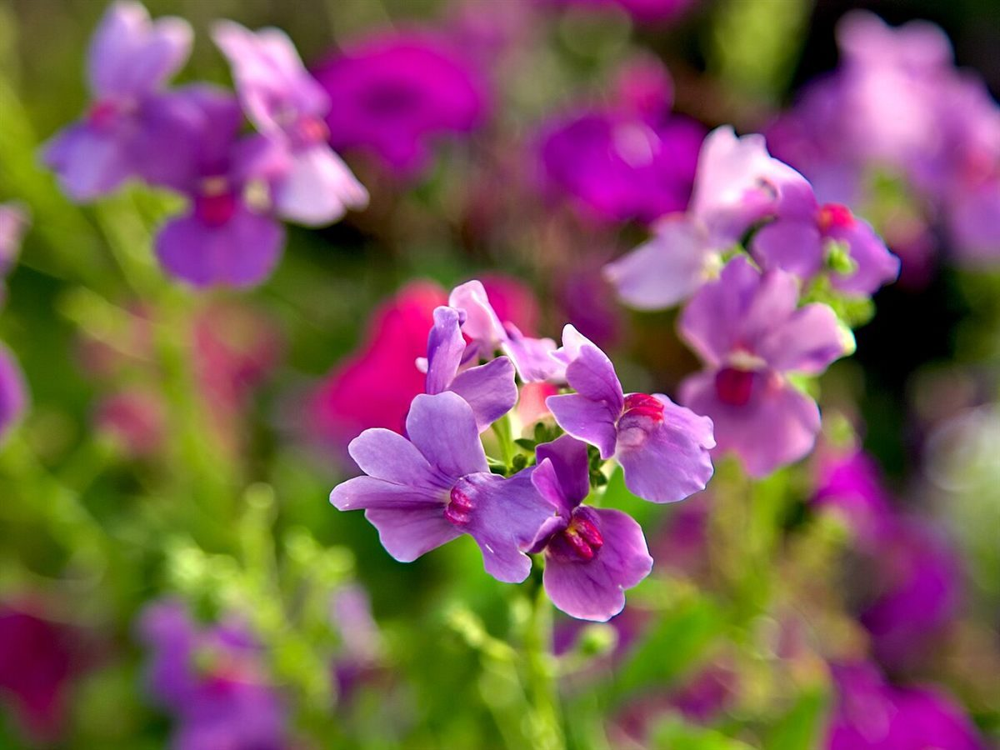

制作側の連想
「はみんぐ」から、ホバリングを思った。
店名の由来は分かりません。制作側は「はみんぐ」という響きから、ハミングバード(ハチドリ)の、空中で一点にとどまって花の蜜を吸うホバリングを連想しました。そこでこのサイトは、花から花へ飛びまわる一本の点線の経路に、5つのページを「停留所」として並べる作りにしています。お店の理念・由来とは無関係な、制作側の連想です。
ひとやすみの写真(イメージ)
焼き色と花の色。
写真は刈谷市やお店のものではありません。パンや麦、花のイメージで選んだ、国外・撮影地不明のフリー素材です。



ご案内
お店のこと(確認できたものだけ)
| 所在地 | 愛知県刈谷市原崎町7丁目610 |
|---|---|
| 電話 | なし |
| 営業時間 | 準備中 |
| 定休日 | 準備中 |
| ご予約 | 準備中 |
| 駐車場 | 準備中 |
| SNS | Instagram @yakitatepan_hamingu |